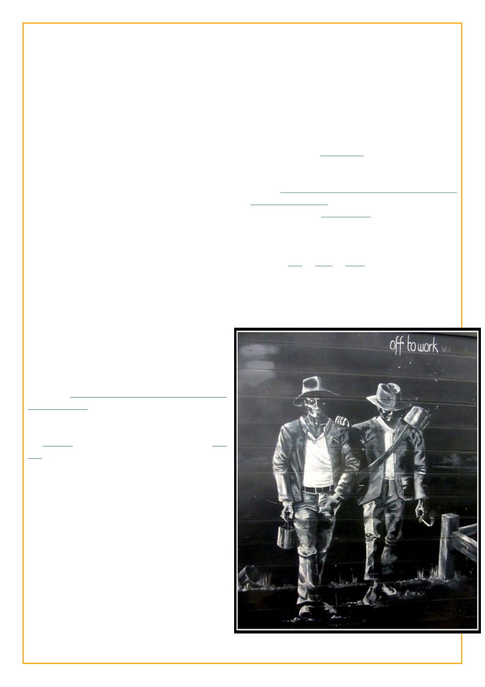

Season VII
2010-10-29 - One might have seen me
yesterday walking about with my pants tucked
into my boots and a very long lanyard hanging
from my ever-present camera, and one of my
shoes is laced with seine twine. Admittedly I
don’t think I’ve shaved in a week, and if you’d
talked to me I might have casually referenced
belaying my work for a bit to go pollinate
subway for lunch; or avasting early to abscond
before my way home was shoaled up by the
swarms of students getting out of the school I
must pass by to get home.
This past weekend I was up in the
rigging of the brig Pilgrim helping unbend (ie
downrig, ie take off) the sails for the winter;
this upcoming weekend I’ll be crewing on the
schooner Spirit of Dana Point for the transit
down from Santa Barbara to Dana Point; and
the week in between I’ve been looking after bees
in boxes.
For most of the last six months I was a
crewmember on the topsail ketch Hawaiian
Chieftain [I had literally only finally finished
that barely two weeks before this new season
began], and for most of the next two years I will
be doing beekeeping in Africa through the
Peace Corps. [Morgan Freeman’s narrator
voice cuts in: he would not, in fact, be doing the
Peace Corps]
Briefly perusing my entries from this season
they’re mostly actually about beekeeping or sailing,
with some historical fiction (going back to as much
as 193,000 BC!) thrown in. Gone are the opinion
essays from my first season (thank goodness, I had
learned that’s rarely a good approach). Some of
my favorite entries were written this series (this
one I rewrote a few times, it got published in an
anthology somewhere I think, and I still plan to
write a whole book on the idea).
Comparatively not-too-far into this season,
that (2011) February, when the topic was
“Cracking Apart” I was arrested for driving under
the influence (I had two beers and three hours
earlier I had had a shot, I was NOT driving blotto
and I think most people, like I did, would not have
considered that too much after spending several
hours at the bar). I was immediately dropped from
the Peace Corps. I posted a voice post about that
situation for the Cracking Apart topic (not a
meandering rant, I actually kept to a structured
planned script), I thought hearing my voice tell the
raw and emotional story about how my life was
literally cracking apart would be the most powerful
way to do it -- the voter’s of LJ Idol apparently didn’t
agree and just a little bit of salt on the wound
eliminated me that week from LJ Idol as well.
Season VIII
2011-10-23 - My entire intro: “Well hopefully it will
get me writing again, I’ve been rather absent from LJ
these last few months -- I’ll be doing LJ Idol
again.” I’m still proud of this entry about a viking
Soon I was off to Africa after all though (as a
short term volunteer rather than a Peace Corps
volunteer). It’s a bit unclear now, as obviously my
attention wasn’t on LJ Idol, but I think I
managed one or two, or three entries and then
possibly just dropped out of the season as finding
time, internet access (or even electricity), to
participate were just too great of difficulties.
 LiveJournal
LiveJournal Dreamwidth
Dreamwidth